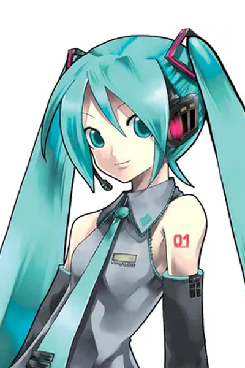
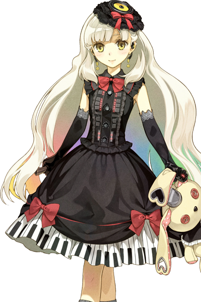
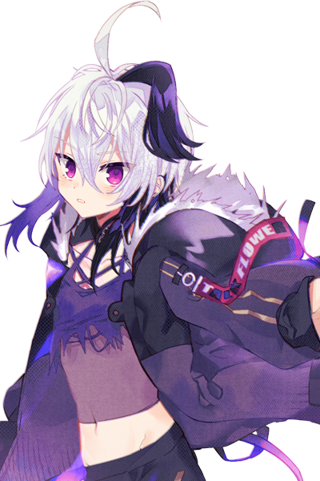

A VOCALOID "vocalist", or "character", refers heavily to an illustrated character of a VOCALOID™-powered voice bank, although a product name or miscellaneous representation (like an avatar) can be included.
The marketing of a vocalist varies by company and some providing their vocalist with a basic profile, backstory, or personality that the consumer and artists can work with.
-
IA
-

Hatsune Miku
-
Kaito
-

Mayu
-
Kagamine Rin/Len
-

Gumi
-
Bruno & Clara
-

Flower
-
Meiko